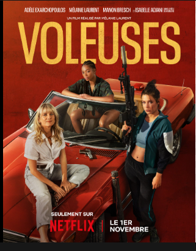
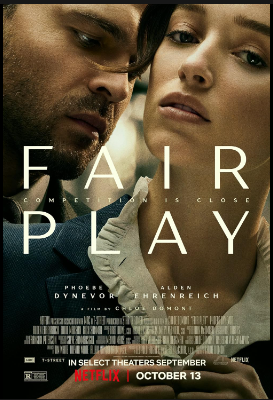
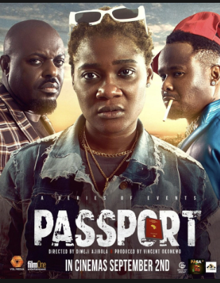
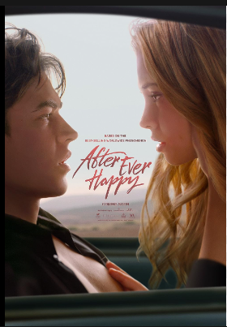

- WING WOMEN 
- FAIR PLAY 
- PASSPORT 
- HEART OF STONE
- AFTER EVER HAPPY 
Carole and Alex are expert thieves. I'll start by saying their portraying was lightheartd and acted well. There have not been a great lot of Netflix action films that have been great. But this was one of the better ones. They need a getaway driver so enlist the help of racecar driver sam. She has a real apart and I also thought she was acted well. The dynamite seemed to work between the three of them. The movie flowed well between the action and there were comedy elements aswell. I do think however the script could be better. It's the one thing that always puts thes films down. Overall though I found this to be good and was enjoyable which is the main thing.
he direction of the movie was obvious from the beginning and yet that didn't change the thrill of the journey. The movie is ultimately about how insecurities and bitterness will rot a relationship. Anxiety and angst are probably the main feelings you will experience throughout the movie but that's because it felt like the stakes were always high. The acting was superb by the whole cast. Phoebe Dynevor's facial expressions really sold the movie. As her character experiences the different stages of the movie, you can't help but feel the same as her. She reminded my of Alexandra Daddario's performance in the White Lotus. So much can be said by bewildering expression. Overall, I'd recommend this gripping psychological drama.
A tale of yearning and adventure unfolds as we delve into the lives of Oscar and Funke. These two individuals, positioned at opposite ends of the loneliness spectrum, find themselves on a quest for excitement and meaning in their otherwise mundane existences. Bound by a serendipitous encounter, they embark on a thrilling journey that transcends societal boundaries and challenges their perceptions of themselves and the world around them.

he plot of Heart of Stone involves a group of top-level former intelligence agents who comprise the Charter, an organization that makes use, for good not evil, of a vast data-tracking thingie known as the Heart, which has the power to make planes drop out of the sky, highjack nuclear weapons, and so forth. The smarties of the Charter include ringleader Nomad (Sophie Okonedo) and a group of operatives with nicknames drawn from the suits of playing cards (in tiny snippets of screentime, we meet BD Wong’s King of Clubs and Glenn Close’s King of Diamonds). A mysterious tech-head named Keya (Alia Bhatt) seeks control of the Heart. Somehow, Rachel Stone fits into all of this, and she gets to wear some fine spy outfits, including a marshmallowy puffer jacket that magically makes her look slender and, much later, a jersey dress like an orange flame.
The fourth film of the AFTER franchise finds Tessa and Hardin at a crossroads: Does Tessa continue trying to save him and their relationship, or is it time to save herself? While Hardin remains in London after his mother's wedding and sinks deeper into darkness, Tessa returns to Seattle and endures a tragedy. If they want their love to survive, they'll need to work on themselves first.
Here is a link to my movie itinerary.